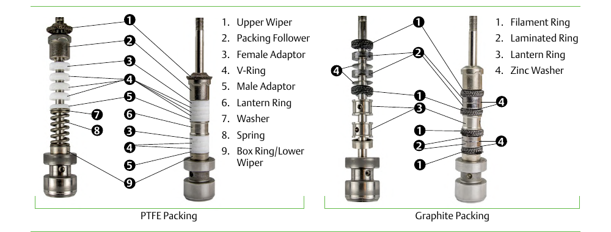

PTFE and Graphite Packing — The Two Base Systems

- PTFE packing — upper wiper, packing follower, female adaptor, V-ring, male adaptor, lantern ring, washer, spring, box ring/lower wiper.
- Graphite packing — filament ring, laminated ring, lantern ring, and a sacrificial zinc washer where corrosion risk calls for it.
After Control Valve Handbook, 6th ed., Fig. 1.11 — used directly, both panels' own printed callouts retained as printed. Component Index: cvh-cmp-stem-packing-types.